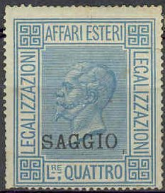
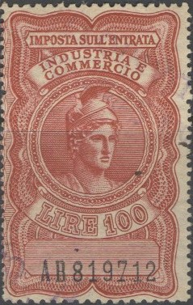
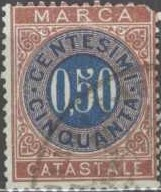

1861 issue, "AFFARI ESTERI FRANCO-BOLLO PER LEGALIZZAZIONI"; 1.50 L blue
Return To Catalogue - Italy fiscal stamps, part 2 - Italy fiscal stamps, part 3 - Italy overview
Note: on my website many of the
pictures can not be seen! They are of course present in the
catalogue;
contact me if you want to purchase the catalogue.
Many fiscal stamps of Italy exist, most of them have the inscription 'marca da bollo', 'tassa di bollo' or 'riscontro', they often resemble postage stamps. If anybody posesses pictures of fiscal stamps of which I do not posess a picture yet, please contact me!
1861 issue, "AFFARI ESTERI FRANCO-BOLLO PER
LEGALIZZAZIONI"; 1.50 L blue



AFFARI ESTERI LEGALIZZAZIONI
The following values exist: 50 c blue, 1 L red, 2 L lilac, 3 L green and 5 L red.
The following values exist: 50 c blue, 1 L orange, 2 L violet, 3 L green and 5 L red.
The following values should exist: 1 L orange, 2 L lilac, 2 L blue, 3 L green and 5 L red (sorry, no picture available yet). The values 1 L orange, 2 L lilac, 3 L green and 5 L red also exist with an overprint consisting of black wavy lines in the corners (1909).
Later issues with image of King Emanuel III:
Other values exist (also in slightly different designs and with
surcharges)

15,00 L left stamp with number and right stamp with image of King
Emanual III, I've also seen the values 5 L black and brown and 20
L green and blue
In this design I have seen: 2 L lilac, 3 L lilac, 5 L olive, 10 L
grey, 15 L light brown and 20 L blue
Two stamps printed together, one with building the other with King Emanuel II:
50 c blue 2.50 L orange 5 L brown (slightly different design, King larger) 10 L green 15 L violet
10 c brown, 20 c green, 30 c green, 60 c green, 1 L brown, 2 L brown, 4 L brown, 5 L brown, 10 L green and brown, 20 L brown and green.
Pairs, printed together, left head of Mercury, right King Emanuel
III
1940 I have seen the following values (both stamps) 5 c blue 10 c green 20 c red 25 c grey 30 c olive 50 c lilac 60 c light brown 1 L lilac 1.50 L green 2 L orange 3 L grey 5 L blue (slightly larger design) 10 L brown (slightly larger design)
The values 5 c, 10 c, 20 c, 25 c, 50 c, 60 c, 1 L, 1.50 L, 2 L, 3 L and 5 L exist with overprint 'F.T.T.' (Free Territory of Trieste).
Larger size (again two different types of stamps printed together)

20 L lilac 50 L blue 100 L red 150 L black
Pairs of stamps, printed together, wolf at left hand side, Roman head at right hand side
50 c violet 1 L lilac 2 L orange 3 L grey 5 L blue 10 L brown 20 L lilac 50 L blue 100 L red 150 L green 300 L grey
I have seen a simila wolf design stamp, but with inscription 'IMPOSTA GENERALE SULL'ENTRATA' instead of 'IMPOSTA SULL'ENTRATA INDUSTRIA E COMMERCIO':
1944 Head of figure at left and value at the right, inscription 'IMPOSTA SULL'ENTRATA INDUSTRIA E COMMERCIO' on top
50 c violet 1 L lilac 2 L orange 3 L black 5 L brown 10 L olive
Larger size, inscription 'IMPOSTA GENERALE SULL'ENTRATA' with Roman head in circle
500 L orange and brown 500 L dark brown and brown
Large stamp with balance, inscription 'IMPOSTA SULL'ENTRATA
VENDITE AL MINUTO'
I've only seen the above two 20 L stamps; one with a building and the other with King Emanuel II.
1872 Value in circle

0,01 green and red 0,02 green and brown 0,05 blue and red 0,10 blue and brown 0,20 red and green 0,50 red and blue L.1 red and brown L.2 brown and green L.5 brown and blue L.10 brown and red
Inscription 'REGNO D'ITALIA MARCA CONSOLARE'
3 L (ORO) brown 9 L (ORO) blue 51,85 L (ORO) brown
Stamps - Francobolli - Briefmarken - Timbres-Poste
{kind=link}